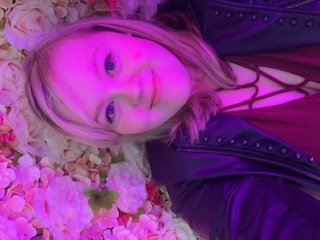

About Me
I'm a University of Maryland student studying journalism with a minor in creative writing. I'm currently the Editor in Chief of The Writer's Bloc which is an arts, music, and culture campus publication based around the College Park and D.C. area. Outside of editing, I write freelance articles for other publications on campus.
I focus mostly on the entertainment world in my writing. I've had a passion for music and all things involving the arts since I was younger so I want to share that love with others in my writing. With everything that's going on in the world, I like to find stories to write that will put a smile on the face of those who read it. So far, I've written a few articles about comedy shows within the UMD community after being inspired by the love for comedy that our campus has had and I hope to continue writing about entertainment in the future as I start my career as a journalist.